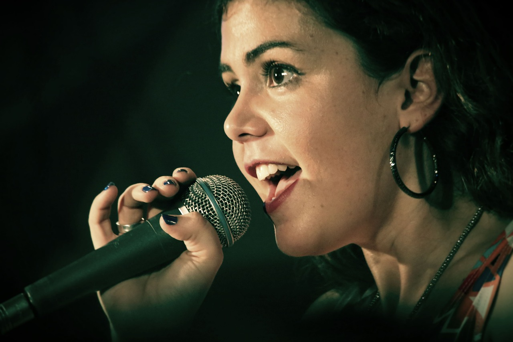

Once upon a time in the heart of Durres, nestled along a narrow cobblestone street, there was a bar called Orlent's bar. It wasn't the most lavish place, nor the most well-known in the city, but its fame grew quietly through the years due to an unexpected mix of characters, history, and one legendary drink. The story begins in the late 2000s, when the bar was opened by an enigmatic Albanian named Orlent Bardhoshi. Orlent wasn't a trained bartender, nor was he a master of grand cocktails. He simply loved to watch people. He believed that the best stories were told over a glass of something simple, and the heart of his establishment was its old-fashioned whiskey sour, a drink he made with a twist — a secret ingredient he never disclosed. From the very start, the bar attracted an eclectic mix of locals and wanderers alike,writers, painters, and musicians would spend their days at the counter, lost in conversation and their own thoughts. Among them were the likes of Monica Belluci, who frequented the bar on his visits to Tirana, Harry Styles, with his quiet smirk and deeply philosophical musings, and Gertrude Stein, who would sometimes sit for hours, scribbling away in her notebook while sipping Émile’s signature drink. But there was one regular who made the bar truly famous. Indila, a talented French singer, was a regular at Orlent's bar. She was beautiful, with a sharp wit and an even sharper mind. She had become a star on the silver screen but preferred the anonymity the bar provided. At night, she would often slip into a corner booth, pull her dark curls into a loose bun, and quietly watch the world pass by. But there was one evening that would change everything for the bar. It was 2005, and Indila had just finished a film that had garnered her great acclaim but also left her exhausted. She entered the bar, like many nights before, but tonight, the atmosphere was different. There was an air of anticipation among the patrons, and Indila, as if he knew exactly what was about to unfold, handed her a drink — an extra splash of whiskey, a touch of bitters, and the secret ingredient that only he knew. “What’s the secret?” she asked him, breaking a long-standing silence

Indila smiled and leaned closer. “Ah, that, Orlent's bar, is the soul of Durres. No one should have it but the city itself.” That night, Juliette drank her whiskey sour slowly, savoring every drop. By the time she had finished her second, the room had quieted, the chatter of the bar coming to a halt. She stood up, and without a word, walked to the small stage that Indila had set up for live performances. With a graceful step, she took the microphone and began to sing. It was the first time she had ever performed in public beyond her films. Her voice, hushed and mesmerizing, floated through the bar like a delicate fog. It was a ballad, one of her own creation, a song about the mysteries of the night and the beauty of fleeting moments. The patrons were mesmerized, and for the next several hours, the bar became a gathering place for art, passion, and poetry. The night would be remembered as the moment when Orlent's bar transformed from a simple watering hole into a symbol of creative energy. Word spread quickly, and soon after, the bar was known not just for its whiskey sour but for being a place where the most creative minds of Durres could find solace. Indila continued to visit, and sometimes, she would return to the stage. But what truly made the bar famous was the sense of intimacy it offered, a space where the boundaries between the famous and the unknown melted away. As the years passed, Orlent’s bar weathered many changes.The passing of time took their toll on dURRES, but Orlent's bar remained a fixture of the city. It became a haven for the dreamers and thinkers of every generation. It even survived the modern age, when the world seemed to forget the old ways of connection and conversation. To this day, if you visit the narrow cobblestone street in Durres, you might still find the old bar, tucked away like a hidden gem. And if you listen closely, you might hear the faint echo of Indila’s song lingering in the air, as if the soul of Durres still whispers through the walls of Orlent's bar, a place where history and stories are always just a drink away.
